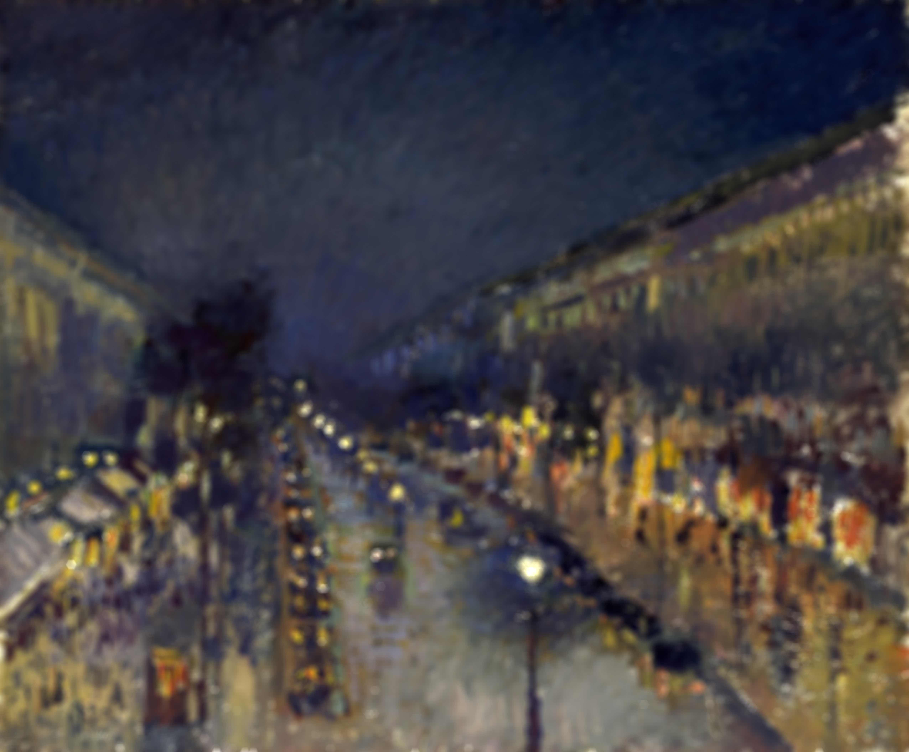

The Boulevard Montmartre at Night
The Impressionist movement signalled, once again, a shift in subject matter and depiction methods for artists. Pioneered notably by Monet, Impressionist painters were generally interested in depicting outdoor scenes with markedly less emphasis on individuals.
This portrayal of Paris' Montmartre by Pissarro is one such example of the thematic shift; in the wake of the industrial revolution, Pissarro here considers the modern city with all of its trappings of anonymity and homogeneity. Though details are not finely illustrated for the viewer, the painting still manages to portray the sense of looking over a rain-slicked street in Paris at night.
The lack of detailing in Impressionist painting echoes just such a sentiment of being emotionally detached from the spectacle of a modern city such as Paris. The viewer is encouraged to experience the city as it is, with all of its bewildering distractions that all blend together into a single impression of the place.
In contrast to earlier artistic depictions of dark spaces, the Parisian street here is extremely well lit at nightfall; yet, at the smallest scales, light and shadow blend together, flat on the canvas. It is only when the viewer takes a step back, and looks at it with the corner of their eye, that the three dimensional, longitudinal extent of the street manifests itself.